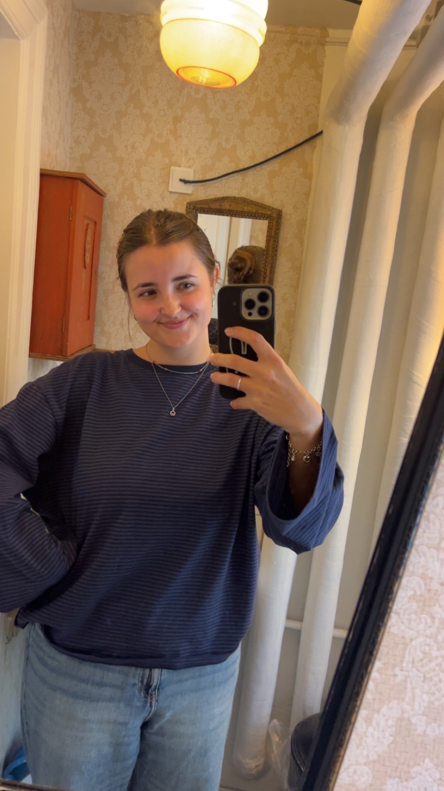

Hey guys! My name is Marrit, I am 24 years old, and I am from the Netherlands. I currenly live in Leiden, but I am originally from Sneek, which is a city in the Dutch province of Friesland in the north of the Netherlands. I work in the public library in Friesland, and will soon start working in the public library in Leiden as well. In my free time like reading books, watching movies (I also love going to the cinema), and I like to knit.
I started the Bachelor's programme for History here in Leiden in 2021, and I graduated last semester. During those five years, I took a gap year to work in Paris for a while as an au pair, and during my final year I extended my studies to go on a study abroad to Ireland, where I studied History at the University of Galway. Click on the link to find the website of the BA History at Leiden University.
Here is a list of some of the books that I like:
| Prior Knowledge | During my BA, I had to work with the archives quite a lot, both the digital archives and the physical ones, so I am quite familiar with those. However, the documents I used to work with were a lot less old than the ones we use have to analyse for this MA! I also took a class on early modern Dutch palaeography, which is somewhat useful for understanding medieval handwritings. Though, I am very unfamiliar with the work in the publishing field (and computer stuffs like what we are doing right now), so I am really curious to know more about that! |
| Expectations | I hope to gain more knowledge about the ways of the publishing world, since I would love to work in that field some day. I also really hope that I will improve my encoding skills and whatnot, because I find it to be really difficult! |